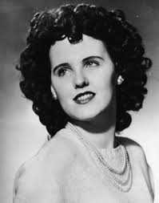
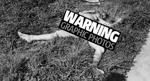
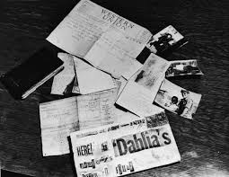
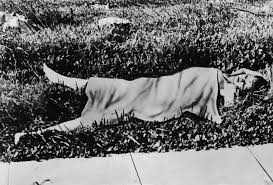

BLACK DAHLIA

Elizabeth Short (July 29, 1924 – January 15, 1947), known posthumously as the "Black Dahlia", was an American woman who was found murdered in the Leimert Park neighborhood of Los Angeles, California. Her case became highly publicized due to the graphic nature of the crime, which included her corpse having been mutilated and bisected at the waist.Short's unsolved murder and the details surrounding it have had a lasting cultural intrigue, generating various theories and public speculation. Her life and death have been the basis of numerous books and films, and her murder is frequently cited as one of the most famous unsolved murders in American history, as well as one of the oldest unsolved cases in Los Angeles County.

On the morning of January 15, 1947, Short's naked body was found severed into two pieces on a vacant lot on the west side of South Norton Avenue, midway between Coliseum Street and West 39th Street in Leimert Park, Los Angeles.The body had apparently been washed by the killer.Short's face had been slashed from the corners of her mouth to her ears, creating an effect known as the "Glasgow smile".She had several cuts on her thigh and breasts, where entire portions of flesh had been sliced away.The lower half of her body was positioned a foot away from the upper, and her intestines had been tucked neatly beneath her buttocks.The corpse had been "posed", with her hands over her head, her elbows bent at right angles, and her legs spread apart.

A total of 750 investigators from the LAPD and other departments worked on the case during its initial stages, including 400 sheriff's deputies and 250 California State Patrol officers.Various locations were searched for potential evidence, including storm drains throughout Los Angeles, abandoned structures, and various sites along the Los Angeles River, but the searches yielded no further evidence.City councilman Lloyd G. Davis posted a $10,000 (equivalent to $114,501 in 2019) reward for information leading police to Short's killer.After the announcement of the reward, various persons came forward with confessions, most of which police dismissed as false. Several of the false confessors were charged with obstruction of justice.On January 21, 1947,a person claiming to be Short's killer placed a phone call to the office of James Richardson, the editor of the Examiner, congratulating Richardson on the newspaper's coverage of the case, and stated he planned on eventually turning himself in, but not before allowing police to pursue him further.Additionally, the caller told Richardson to "expect some souvenirs of Beth Short in the mail".

The notoriety of Short's murder has spurred a large number of confessions over the years, many of which have been deemed false. During the initial investigation into her murder, police received a total of 60 confessions, most made by men.Since that time, over 500 people have confessed to the crime, some of whom had not even been born at the time of her death.Sergeant John P. St. John, a detective who worked the case until his retirement, stated, "It is amazing how many people offer up a relative as the killer."Police came to consider George Hill Hodel Jr a suspect after the 1947 murder of Elizabeth Short. He was never formally charged with the crime, and came to wider attention as a suspect after his death when he was accused by his son, Los Angeles homicide detective Steve Hodel, of killing Short and committing several additional murders. Prior to the Dahlia case, he was also a suspect in the death of his secretary, Ruth Spaulding, but was not charged; and was accused of raping his own daughter, Tamar, but acquitted. He fled the country several times, and spent 1950 to 1990 in the Philippines.
But still the same questions arise...(MindHunting Questions)
1. What was the need that the killer made her body look like that and mutilated the body??
2. Was the murderer someone from the hollywood itself??
3. Since so many people confessed for the crime...was "Short" not good in real life..which made her hated by most of the people??